// Trilha selecionada: —
Agro forte, futuro sustentável: o equilíbrio entre produção e meio ambiente.
De que lado você fica: Cultivo Tradicional × Cultivo Tecnológico?
Um site educativo do Agrinho 2026 que coloca lado a lado o cultivo tradicional e o cultivo tecnológico — duas formas de produzir alimento que, juntas, sustentam o agro brasileiro.


01 — Sobre o Agrinho
O que é, de onde vem e o que propomos.
O Programa Agrinho é uma iniciativa de educação ambiental e cidadã que, há mais de três décadas, leva ao ambiente escolar reflexões sobre o campo, a cidade e a relação entre eles.
Educação que nasce no campo
O Agrinho é um programa socioeducativo voltado a estudantes da educação básica, com o objetivo de aproximar o conhecimento sobre agricultura, meio ambiente e cidadania da realidade escolar, por meio de materiais didáticos e concursos de produção.
Mais de três décadas de história
Desde o início dos anos 1990, o programa é promovido por entidades do sistema rural em parceria com secretarias de educação, alcançando milhões de estudantes em diferentes estados brasileiros ao longo dos anos.
Mostrar as duas faces do campo
Em vez de tratar tradição e tecnologia como opostos, este site propõe um percurso onde o visitante experimenta os dois caminhos, entende seus fundamentos e percebe como eles podem se complementar.
Linha do tempo do programa
Década de 1990
Criação do programa
Entidades ligadas ao sistema agropecuário articulam, junto a secretarias de educação, um programa de caráter socioeducativo voltado às escolas da rede pública e privada.
Expansão estadual
Crescimento da adesão escolar
O programa passa a alcançar um número crescente de escolas e municípios, consolidando-se como um dos maiores projetos de educação rural e ambiental do país.
Era digital
Novos formatos de produção
Categorias de produção textual, artística e, mais recentemente, de programação front-end passam a integrar os concursos, refletindo as transformações tecnológicas do próprio campo.
2026
Esta proposta
Um site que apresenta, lado a lado, o cultivo tradicional e o cultivo tecnológico, com fundamentação teórica, dados e um jogo educativo para cada trilha.
02 — Justificativa
Por que falar de tradição e tecnologia no mesmo espaço?
Porque o agro brasileiro real não é uma escolha binária — é um espectro. Pequenas propriedades familiares e grandes operações de precisão convivem no mesmo território e, frequentemente, dependem uma da outra.
O Brasil tem os dois Brasis agrícolas
De um lado, a agricultura familiar — responsável por grande parte dos alimentos que chegam à mesa do brasileiro, sustentada em conhecimento tradicional acumulado por gerações. De outro, o agronegócio de precisão, que usa dados, sensores e máquinas autônomas para otimizar grandes áreas de produção. Compreender as duas lógicas é compreender o país.
Estudantes como ponte entre campo e cidade
Muitos estudantes da educação básica nunca pisaram em uma propriedade rural, mas dependem diretamente dela três vezes por dia. Apresentar os fundamentos de ambos os modelos de cultivo ajuda a formar uma visão crítica sobre de onde vêm os alimentos e qual o custo ambiental de cada escolha produtiva.
Tradição não é atraso, tecnologia não é solução mágica
Práticas tradicionais como rotação de culturas, plantio consorciado e manejo orgânico do solo têm respaldo agroecológico consolidado. Ao mesmo tempo, tecnologias como agricultura de precisão reduzem desperdício de insumos. O discurso de que uma "substitui" a outra simplifica demais um problema complexo.
Por que um site com duas trilhas?
A escolha inicial entre "cultivo tradicional" e "cultivo tecnológico" não é uma divisão definitiva — é um convite. Ao final, o visitante é incentivado a explorar a outra trilha e perceber os pontos de contato entre elas, reforçando a ideia central: equilíbrio entre produção e meio ambiente.
03 — Objetivos
O que este projeto pretende alcançar.
Objetivos gerais e específicos que orientaram o desenvolvimento do conteúdo, do design e da experiência interativa.
Apresentar os fundamentos do cultivo tradicional
Explicar práticas como manejo do solo, policultura, sementes crioulas e saberes populares, situando-os dentro do debate sobre agroecologia e segurança alimentar.
Apresentar os fundamentos do cultivo tecnológico
Explicar como sensores de solo, drones, GPS de precisão e modelos preditivos são usados para reduzir desperdício de água, insumos e energia na produção agrícola.
Comparar impactos ambientais de forma honesta
Mostrar vantagens e limitações reais de cada modelo, evitando promover qualquer um deles como solução única para a sustentabilidade do campo.
Criar uma experiência de navegação simples e acessível
Garantir contraste adequado, navegação por teclado, textos alternativos e uma estrutura de menu única (sem submenus escondidos) para que qualquer visitante encontre o conteúdo rapidamente.
Gamificar o aprendizado
Oferecer um jogo de decisões que reflete, na prática, os trade-offs entre custo, sustentabilidade e produtividade discutidos nas seções teóricas.
Fundamentar todo o conteúdo em referências confiáveis
Basear as informações apresentadas em fontes institucionais reconhecidas sobre agricultura, meio ambiente e energia, disponibilizadas na seção de referências.
04 — Cultivo Tradicional & Tecnológico
Duas formas de cultivar — a sua trilha em destaque.
Cada modelo tem fundamentos próprios. Veja a comparação abaixo.
🌾 Cultivo Tradicional
Saber acumulado, manejo direto
- Conhecimento transmitido entre gerações, adaptado às condições locais de solo e clima.
- Práticas como rotação de culturas, plantio consorciado e adubação orgânica.
- Menor dependência de insumos industrializados e de energia externa.
- Maior uso de mão de obra e tempo de manejo.
- Produtividade por área tende a ser menor, mas com baixo custo de entrada.
- Base da agricultura familiar, que responde por parcela relevante dos alimentos consumidos no país.
🛰️ Cultivo Tecnológico
Dados, sensores, precisão
- Decisões guiadas por dados de sensores de solo, imagens de satélite e drones.
- Aplicação localizada de água, fertilizantes e defensivos apenas onde necessário.
- Maquinário guiado por GPS reduz sobreposição de plantio e desperdício de sementes.
- Investimento inicial elevado em equipamentos, software e conectividade.
- Produtividade por área tende a ser maior, com uso mais eficiente de recursos.
- Central no agronegócio de exportação e em grandes propriedades.
Agroecologia e saberes tradicionais
Sistemas agroecológicos baseiam-se na diversificação de cultivos, no uso de adubação verde e na preservação da biodiversidade do solo. Esses princípios são reconhecidos por organizações internacionais como caminhos viáveis para produção sustentável de alimentos, especialmente em propriedades familiares de pequeno porte.
Agricultura de precisão
A agricultura de precisão integra geotecnologias, sensoriamento remoto e análise de dados para mapear a variabilidade do solo e da lavoura, permitindo que insumos sejam aplicados em taxa variável conforme a necessidade real de cada zona do terreno — reduzindo desperdício e impacto ambiental.
05 — Jogo Educativo
Missão Fazenda Sustentável
Tome decisões ao longo de três fases e veja como cada escolha — tradicional, tecnológica ou mista — afeta sustentabilidade e lucratividade.
Fase 1
Escolha sua fonte de energia
Sua fazenda precisa de energia para funcionar. Qual fonte você escolhe?
Fase 2
Como você vai manejar a lavoura?
Chegou a hora de plantar. Qual abordagem você adota?
Fase 3
Gestão de água e solo
Como sua fazenda vai tratar os recursos naturais?
Pronto para começar?
Escolha uma opção em cada fase para ver o resultado final da sua fazenda.
06 — Referências
Fontes e fundamentação teórica
Todo o conteúdo apresentado foi reescrito e adaptado de forma autoral com base nas seguintes fontes institucionais.
Desenvolvido por Izaque Closs Scheid da Silva — 1.º Ano C, Colégio Estadual Cívico Militar Frentino Sackser, Marechal Cândido Rondon – PR.
Concurso Agrinho 2026 — categoria Programação Front-End (HTML, CSS e JavaScript). Código escrito sem frameworks externos.
07 — Contato
Fale com a equipe do projeto
Dúvidas, sugestões ou correções sobre o conteúdo? Envie uma mensagem.
Agrinho 2026
Site educativo desenvolvido para o concurso Agrinho, categoria Programação Front-End — Ensino Médio.
Agro forte, futuro sustentável
Equilíbrio entre produção e meio ambiente, explorado por meio de duas trilhas: cultivo tradicional e cultivo tecnológico.